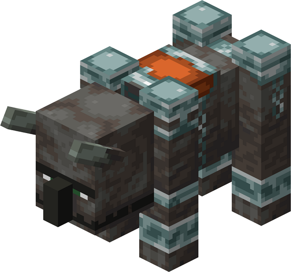
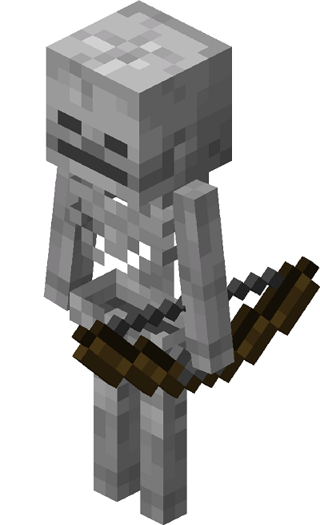
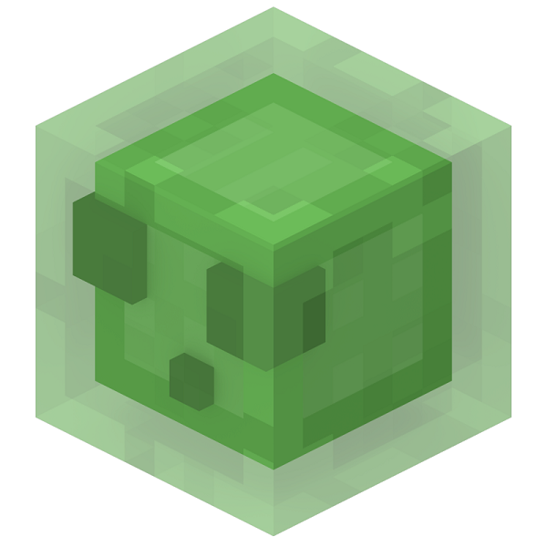
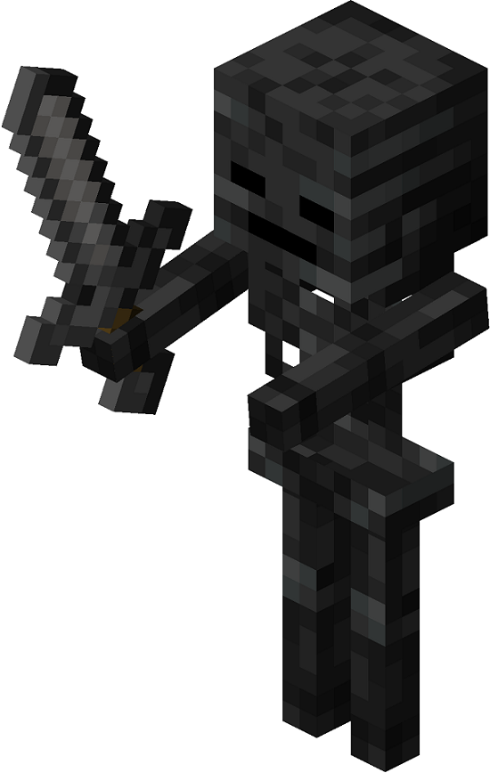

Что такое майнкрафрт? Майнкрафт (Minecraft) - это компьютерная игра с бесконечными мирами, созданными из блоков, где нужно строить и выживать. Главный герой игры - Стив, именно им управляет игрок. Он попадает в мир, где ничего нет. Задача Стива построить себе жилище и собрать необходимые для жизни ресурсы, либо отвоевать их у других. В этой игре существует 3 типа мобов:дружелюбные, нейтральные и враждебные
Дружелюбные |
|
Дружелюбные мобы — это мобы, которые не атакуют игрока в любом случае. Некоторых из них можно разводить и / или приручить. |
|
Летучая МышьЛетучая мышь (англ. Bat) — летающий дружелюбный моб, одно из нововведений Pretty Scary Update. У летучих мышей нет дропа, и единственная практическая польза от них — их писк, по которому можно обнаружить пещеру или другую натуральную структуру, в которой они находятся. | 
|
КошкаКошка (англ. Cat) — приручаемый мирный моб, который встречается в деревнях.Интересные фактыМодель чёрно-белой кошки создана по образу и подобию Ньютона — кота Джеба[6]. В реальности первые кошки были приручены из степных кошек, которые обитают в саванне. На MINECON Earth 2018 Джеб заявил, что игроки будут голосовать за лучшую девятую текстуру кошки, которая будет добавлена вместе с остальными восемью. Победила кошка ютубера GoodTimesWithScar’s Джелли и была добавлена в обновлении Village and Pillage. | 
|
КурицаКурица (англ. Chicken) — дружелюбный моб, откладывающий яйца и не получающий урона от падения. При убийстве взрослой курицы выпадает: 0–2 пера. Возможное количество выпавших перьев увеличивается на единицу с каждым уровнем чар Добыча, достигая 0–5 при чарах Добыча III. 1 сырая курятина (1 жареная курятина, если курица сгорела). Максимальное количество увеличивается на единицу с каждым уровнем чар Добыча, достигая значений 1–4 при чарах Добыча III. 1–3 Сфера опыта, если убита игроком или приручённым волком (10 Сфера опыта, если она была под зомби-наездником). Также курицы откладывают яйцо каждые 5-10 минут. После разведения выпадает 1–7 Сфера опыта При убийстве цыплёнка не выпадает никаких вещей и опыта. | 
|
КороваКорова (англ. Cow) — распространённый дружелюбный моб, являющийся источником кожи, говядины и молока. Коровы обитают в травянистых биомах. 0-2 кожи. Максимальное количество выпавших предметов возрастает на единицу с каждым уровнем чар Добыча, достигая 5 предметов при чарах Добыча III. 1-3 сырой говядины (жареная говядина выпадает, если корова погибает от огня). Максимальное количество выпавших предметов возрастает на единицу с каждым уровнем чар Добыча, достигая 6 предметов при чарах Добыча III 1–3 Сфера опыта-тех.gif, если убита игроком или прирученным волком. После успешного разведения выпадает 1–7 Сфера опыта-тех.gif. Подобно другим детёнышам, из телёнка не выпадают предметы или опыт. | 
|
ЛошадьЛошадь (англ. Horse) — дружелюбный и приручаемый моб, используемый игроками в качестве транспорта.Интересные фактыЕсли на лошади прыгнуть в лаву, то в сообщении о смерти будет написано «лошадь решил(а) поплавать в лаве» Если кинуть в лошадь взрывное усиленное зелье скорости, то движение на лошади будет даже быстрее, чем полёт в творческом режиме. Лошадь-зомби и лошадь-скелет — единственные дружелюбные мобы, являющиеся нежитью. Если передвижение лошади ограничить, оставив единственным выходом пустой блок между заборов, она не будет сама выходить из «стойла». | 
|
СвиньяСвинья (англ. Pig) — дружелюбный моб, который впервые появился в версии Survival Test. Главная ценность свиней состоит в том, что они являются средством передвижения и возобновляемым источником свинины. Размеры свиньи — 1.1875 блока высота, 0.625 блока ширина и 1.25 блока длина.ДропСырая свинина (1–3) при смерти Жареная свинина (1–3) при смерти от огня Седло (если надето) | 
|
ОвцаОвца (англ. Sheep) — дружелюбный моб. Главное использование овец — получение шерсти и баранины. Овец можно подстричь ножницами и получить шерсть цвета самой овцы.Дроп1 шерсть соответствующего цвета. Из овец, у которых не отросла шерсть, она не выпадает. 1-2 сырой баранины (жареная баранина выпадает, если овца погибает от огня). 1-3 сфер опыта, если убита игроком или приручённым волком. После успешного разведения выпадает 1-7 сфер опыта. Подобно другим детёнышам, из ягнёнка не выпадают предметы или опыт. | 
|
Жители, или крестьянеЖители, или крестьяне (в BE и Dungeons селяне), (англ. Villager) — дружелюбные мобы, населяющие деревни и работающие по своим профессиям, с которыми может взаимодействовать игрок. Их внешний вид изменяется в зависимости от биома, в котором расположена деревня, а также уровня. Игрок может торговать с жителями, используя изумруды в качестве валюты.ДропУбийство как маленьких, так и взрослых жителей не приносит ни опыта, ни дропа. После торговли игрок получает 3-6 Сфера опыта После торговли при условии, что житель может размножаться, выпадает 8-11 Сфера опыта | 
|
Нейтральные |
|
| Нейтральные мобы иногда пассивны, а иногда враждебны по отношению к игроку. Многие нейтральные мобы становятся враждебными только тогда, когда их атакуют первыми, но для некоторых нейтральных мобов есть другие способы спровоцировать их на враждебность. | |
ПчелаПчела (англ. Bee) — нейтральный моб. Игрока, спровоцировавшего пчелу, атакует рой, отравляя его. Пчёлы спаунятся на любом уровне сложности, но не атакуют на мирном уровне сложности.АтакаКак волки и зомбифицированные пиглины, спровоцированные пчёлы атакуют напавших игроков группой. У разозлённых пчёл текстура глаз меняется на красную. При атаке одной пчелы или уничтожении гнезда злыми становятся все находящиеся рядом пчёлы. При сборе сот или бутылочки мёда из гнезда или улья вылетят находящиеся там пчёлы и нападут на игрока. Этого можно избежать, если разжечь под гнездом или ульем костёр или собрать его ночью. | 
|
ДельфинДельфин (англ. Dolphin) — нейтральный моб, обитающий во всех видах океана, кроме замёрзшего.ДропПри убийстве дельфина можно получить 0-1 сырую треску (жареную треску при смерти от огня). Максимальное количество дропа увеличивается на 1 единицу за уровень «Добычи». Таким образом, убийство дельфина оружием, зачарованным на «Добычу» III уровня, позволит получить до 0-4 предмета. Также выпадает 1-2 сферы опыта.[только для Java Edition]Сила атакиЛегко: 2Нормально: 3 Сложно: 4 | 
|
Странник Края, или ЭндерменСтранник Края, или эндермен, (англ. Enderman) — нейтральный моб, обитающий во всех трёх измерениях и способный телепортироваться, а также поднимать некоторые блоки.ДропЖемчуг Края (0–1) при смертиСила атакиЛегко: 4Нормально: 7 Сложно: 10 Перенос блоковСтранник Края может собирать, переносить и устанавливать блоки. Этот моб спаунится без блоков в руках, но может собирать некоторые блоки. В руках у него любой блок немного больше, чем в руках у игрока. Исследования в предварительных версиях[1] показали, что странник Края может собирать даже коренную породу, но более поздние тесты и вскрытие кода демонстрируют, что это уже исправлено | 
|
Железный големЖелезный голем (англ. Iron Golem) — создаваемый нейтральный моб, основным предназначением которого является защита игроков и деревенских жителей от враждебных мобов, набегов и осад. Является одним из самых больших мобов: 2,7 блока в высоту и 1,4 блока в ширину.ДропЖелезный слиток (3–5)Мак (0–3) Сила атакиМирный: 0 (но все же выполняет анимацию атаки) Легкий: от 4 до 11 Нормальный: от 7 до 21 Сложный: от 10 до 31СозданиеДля создания железного голема вручную требуется 36 железных слитков. Оно отчасти похоже на создание Иссушителя. Для этого нужно выставить железные блоки Т-образной формой и поставить после этого вырезанную тыкву сверху: При создании голема следует учитывать тот факт, что тыкву необходимо ставить в последнюю очередь. Также есть ошибка: если в пустоте присутствует какой-либо блок, то железный голем не создастся. Созданный искусственно голем не будет атаковать создателя. | 
|
ПандаПанда (англ. Panda) — нейтральный моб, обитающий в бамбуковых лесах.Сила атаки3 на любом уровне сложностиДропПосле смерти панды дропают: 1 бамбук.[только для JE]Бамбук в количестве 1—2.[только для BE] Торт в количестве 1 (если игрок ранее покормил). 1—3 опыта при смерти от прирученного волка или игрока. Детёныш панды имеет шанс 0,1 % дропнуть слизь после того, как чихнул. При смерти детёнышей панд ничего не выпадает. СпаунПанды спаунятся группами по 1—2 в бамбуковых лесах на поверхности блоков дёрна, если уровень освещения — 9 и больше, а над блоком травы как минимум два пустых блока. Тип панды при спауне определяется случайным образом. Обычные панды — самые распространённые, а коричневые — самые редкие. | 
|
ПиглиныПиглины (англ. Piglins) — это нейтральные мобы, которые населяют некоторые адские биомы. Они оснащены арбалетом или золотым мечом. Они враждебны по отношению к игрокам, не носящим золотую броню, и нейтральны по отношению к игрокам, её носящим. Также атакует скелетов-иссушителей и хоглинов. Может надевать любое снаряжение и использовать любые предметы, но если они уже имеют золотой предмет из той же категории, то ни на что его не променяют.Сила атакиДальний бойОт 3 до 6Ближний бойЛёгкий: От 2 до 5Нормальный: От 3 до 8 Сложный: От 5 до 12 ДропУ пиглинов отсутствует обычный дроп. У любого подобранного ими снаряжения или предмета имеется 100%-ый шанс выпасть при убийстве, прочность предметов при этом не изменяется.Экипировка Золотой меч Арбалет Любая золотая броня (в зависимости от того, какая часть брони надета на пиглина). Если пиглин заспаунился с данными предметами, то имеется 8,5%-ый шанс их выпадения со случайной прочностью. Каждый уровень чар Добыча увеличивает шанс выпадения на 1 (11,5 % с Добычей III). Опыт При смерти пиглина от игрока или прирученного волка из него выпадает 5 единиц опыта. | 
|
ИглобрюхИглобрюх — мирный моб, появляющийся в океанах. Он наносит урон и накладывает эффект отравления на ближайших игроков и некоторых мобов, но не становится враждебным.ДропПри убийстве рыбы может выпасть один из указанных типов предметов: 1 Иглобрюх1 костная мука (с шансом 5 %) [только для Java Edition] 1-2 кости (с шансом 25 %) [только для Bedrock Edition] 1–3 Сфера опыта-тех.gif при убийстве игроком или приручённым волком. Сила атакиЛегко: 2Нормально: 3 Сложно: 4 Отравление: 1 в течение 1,25 с Отравление на 7 с | 
|
ПаукПаук (англ. Spider) — моб, впервые добавленный в Survival Test. Глаза пауков светятся красным цветом, что позволяет легко увидеть их в темноте. В отличие от зомби, крипера и скелета паук имеет размер 2×2×1, а не 1×1×2, что позволяет ему пролезать в проходы высотой 1 и шириной 2 блока. Представляют собой гигантских серо-коричневых пауков с красными глазами.Сила атакиЛегкий: 2Нормальный: 2 Тяжелый: 3 ДропНить (0–2)Паучий глаз (33,3 %) при убийстве игроком Опыт5 | 
|
Пещерный паукПещерный паук (англ. Cave Spider) — моб, который появляется в заброшенных шахтах и может отравить игроков на некоторое время.Сила атакиЛёгкий: 2Нормальный: 2 Сложный: 3 ДропПри смерти с пещерных пауков выпадают 0—2 нити. Кроме того, имеется шанс, равный 1⁄3, на выпадение паучьего глаза при убийстве игроком. Также с них выпадают 5 единиц опыта при убийстве игроком или прирученным волком. | 
|
ВолкВолк (англ. Wolf) — нейтральный моб[2], который может быть приручен игроком.Сила атакиДикий: Лёгкий: 3Нормальный: 4 Сложный: 6 Приручённый: Лёгкий: 3 Нормальный: 4 Сложный: 6 ОпытУбийство взрослого:1–3 Сфера опыта Разведение: 1–7 Сфера опыта ПоведениеВолки могут быть в трёх разных обличиях в зависимости от того, как игрок взаимодействует с ними: дикий (неприручённый), враждебный, и приручённый.Волки охотятся на кроликов, скелетов, овец и лис которые будут при этом убегать, за исключением кроликов-убийц, которые нападают на волков. Волки будут мстить, если их атакует моб или игрок. | 
|
Зомбифицированный пиглин или зомби-пиглинЗомбифицированный пиглин или зомби-пиглин (англ. Zombified Piglin), ранее зомби-свиночеловек (англ. Zombie Pigman) — нейтральный моб, обитающий в Нижнем мире. Зомбифицированные пиглины спаунятся группами и изначально не враждебны, но если игрок или моб нанесёт урон любому зомби-пиглину, все поблизости станут атаковать нападающего.Сила атакиЛёгкий: 5Нормальный: 9 Сложный: 13 ДропГнилая плоть (0–1)Кусочек золота (0–1) Редкий дропЗолотой слиток (0–1) при убийстве игрокомЗолотой меч (0–1) при убийстве игроком ОпытОбычный: 5 Сфера опытаРебёнок: 12 Сфера опыта | 
|
КозаКоза (англ. Goat) — нейтральный моб, обитающий в горах.ПоведениеИногда коза прыгает на высоту до 10 блоков в основном для преодоления различных препятствий, например небольшого отверстия в земле или рыхлого снега. Козы получают на 20 меньше урона от падения. В отличие от других мобов, они не умеют плавать, из-за чего в водоёмах с глубиной 2 блока начинают тонуть и получать урон.АтакаЕсли коза смотрит прямо на моба или игрока, то каждые 10-15 секунд она будет атаковать с расстояния до 16 блоков. Этот моб никогда не относится агрессивно к особям своего вида. Выбрав цель для атаки, коза воспроизводит небольшую анимацию разминки, а после быстро бежит к жертве, чтобы забодать её и отбросить на значительное расстояние. Если агрессивная коза случайно врежется в блок, то есть шанс выпадения козьего рога.[только для Bedrock Edition] Козы не становятся враждебными, если их атакует игрок или моб. При нападении на козу она начнёт убегать, подобно дружелюбным мобам. | 
|
Враждебные |
|
Враждебные мобы — опасные, агрессивные мобы, которые всегда атакуют игрока, едва заметив его. |
|
ИфритИфрит, или всполох (англ. Blaze) — летающий враждебный моб, появляющийся в адских крепостях.Дроп0—1 огненный стержень (0—4 при зачаровании Добычи III), если убит игроком или приручённым волком. 10 Сфера опыта, если убит игроком или приручённым волком. ПоведениеАтакаИфриты атакуют игроков в радиусе 48 блоков. Если один из ифритов получил урон от игрока или моба, он предупреждает всех остальных ифритов в радиусе 48 блоков, чтобы они напали на атаковавшего. Ифрит пытается подлететь к цели, пока не окажется на расстоянии 0,5-3,5 блока от неё. Ифрит атакует цель своими огненными шарами. Стреляет только в том случае, если видит цель по прямой. Интервал между атаками составляет 5 секунд, по истечении которых в течение 0,9 секунды моб выпускает 3 огненных шара и загорается. Если игрок спрячется, то ифрит остановит атаку, не выпустив все 3 шара. Точность стрельбы сравнима с раздатчиком, но в отличие от последнего, скорость его шаров постоянна.СпаунИфриты самостоятельно появляются на территории адской крепости при уровне освещения 11 или ниже, а также из находящихся в структуре спаунеров, которые расположены на небольших платформах | 
|
КриперКрипер (от англ. Creeper, от слова to creep — «подкрадываться») — зелёный, практически бесшумный моб-камикадзе. При приближении к игроку на небольшое расстояние начинает шипеть и взрывается спустя 1,5 секунды. При детонации издаёт звук, похожий на обычный взрыв, но мягче и короче. Не сгорает на солнце, в отличие от зомби и скелета, и не теряет активности, в отличие от паука и странника Края. Криперы часто встречаются на поверхности обычного мира ночью и в тёмных пещерах. Криперы появляются при уровне освещения 0. Небесные светила также влияют на спаун, но в таком случае криперы появляются при уровне 7 и меньше. Криперы весьма опасны, так как передвигаются практически незаметно и могут причинить большой вред как игроку, так и его постройкам.АтакаЗависит от сложности и близости к взрывуМаксимальный урон: Обычный: 49 Заряженный: 97 ДропПорох (0–2) при смерти, если не взорвалсяПластинка (1) при убийстве скелетом или зимогором Голова крипера (1) при убийстве заряженным крипером | 
|
СтражСтраж (англ. Guardian) — враждебный моб, обитающий под водой.АтакаСтраж использует два типа атаки: лазерный луч и шипы. Шипы работают по принципу, схожему с одноимёнными чарами. В отличие от других враждебных мобов, страж не станет преследовать игрока, если тот отступил. Вместо этого он продолжит плавать и нападёт лишь тогда, когда игрок сам попадёт в его поле зрения.ЛазерЛазер заряжается две секунды. Во время зарядки не наносит урона. Начиная с фиолетового цвета, он постепенно переходит в жёлтый, после чего вспыхивает зелёным и наносит 6 (Heart.svgHeart.svgHeart.svg) урона, плюс 1 (Half Heart.svg) дополнительного урона на Нормальной сложности. Дополнительный урон не поглощается бронёй. После этого страж ждёт 3 секунды и повторяет атаку. Если во время атаки цель подплывает слишком близко, моб прекратит атаку и постарается уйти на безопасное расстояние, после чего продолжит стрелять оттуда. Лазер не блокируется щитом и от него невозможно увернуться. Радиус его поражения составляет 15 блоков. Если игрок уплыл за его пределы или если на пути лазера появился твёрдый блок, зарядка лазера прерывается.ШипыЕсли шипы выпущены, игроку наносится урон каждый раз, когда он бьёт стража. Будучи загнанным в угол, моб, как правило, выпустит шипы и начнёт атаковать игрока, невзирая на малое расстояние.СветСтражей привлекают заряженные морские проводники и любые другие источники света. Находясь рядом с морским проводником, страж получает 4 (Heart.svgHeart.svg) урона каждые 2 секунды.ДропСтражи гарантированно дропают 0-2 призмариновых осколка. Каждый уровень зачарования «Добыча» увеличивает максимальное их количество на 1, до максимума в 5 осколков при 3 уровне. Также может выпасть один из следующих предметов: Сырая треска (жареная треска, если погиб от огня[только для Java Edition]) с шансом 40 %. Каждый уровень чар «Добыча» увеличивает максимальное их количество на 0-1, до максимума в 4 трески при 3 уровне. Призмариновый кристалл с шансом 40 %. Каждый уровень чар «Добыча» увеличивает максимальное их количество на 0-1, до максимума в 4 кристалла при 3 уровне. Ничего с шансом 20 %. Редкий дроп может выпасть с шансом 2,5 %. В качестве редкого дропа может выпасть сырая рыба (шанс 60 %), сырой лосось (25 %), тропическая рыба (2 %), и иглобрюх (13 %). При смерти от огня рыба выпадает жареной. Меч, зачарованный на «Добычу» увеличивает шанс выпадения редкого дропа на 1 % за уровень, до максимума в 5,5 % при 3 уровне. Страж при смерти даёт 10 Сфера опыта если убит игроком или прирученным волком. | 
|
Древний стражДревний страж (англ. Elder guardian) — более сильная, продвинутая версия стража, которая может наложить на игрока эффект утомления.АтакаЛегко: 5Нормально: 8 Сложно: 12 ДропПри убийстве древнего стража выпадают следующие вещи:0-2 Призмариновый осколок — всегда. Зависит от наличия и уровня чар «Добыча». Выпадает на 1 больше с каждым уровнем. То есть, если убить древнего стража инструментом с чарами «Добыча III», то выпадет до 5 осколков. 1 Мокрая губка — только в случае, если убит игроком. Не зависит от чар. Одно из перечисленного c шансом, равным 1⁄6 не выпадает вовсе: Сырая треска (Жареная треска если сгорел[только для JE]) с шансом, равным 1⁄2. С каждым уровнем чар «Добыча» выпадает на 1 больше. С чарами «Добыча III» выпадает до 4 единиц. Призмариновый кристалл с шансом 1⁄3. С каждым уровнем чар «Добыча» выпадает на 1 больше. С чарами «Добыча III» выпадает до 4 единиц. С шансом 2,5 % выпадает случайная рыба. С каждым уровнем чар «Добыча» шанс увеличивается на 1 %. С чарами «Добыча III» выпадает с шансом до 5,5 %. Дроп определяется с такими же шансами, как и при рыбалке: Сырая треска — 60 % Сырой лосось — 25 % Иглобрюх — 13 % Тропическая рыба — 2 % | 
|
ГастГаст (англ. Ghast) — это огромный белый летающий враждебный моб, обитающий в Нижнем мире и стреляющий взрывающимися огненными шарами в игрока. Гаст является вторым по величине мобом, который естественно спаунится в игре (самым большим является дракон Края). Гаст бесцельно летает по Нижнему миру с закрытыми глазами и ртом и периодически издаёт звуки, похожие на стон, или плач, открывает глаза и рот, заметив игрока. Он издаёт громкий визг при атаке игрока, и громко кричит, когда получает урон. Звуки, издаваемые гастом, имеют минимальную интенсивность независимо от расстояния, это означает, что гаст может быть ближе, чем кажется. Он имеет размер 4×4×4 блока, а также 9 щупалец размером чуть длиннее, но тоньше игрока. Щупальца не являются частью хитбокса гастаДропСлеза гаста (0–1) . «Добыча» увеличивает максимальное количество выпадаемых слёз гаста по одной штуке на уровень, максимум можно получить 4 слезы гаста с «Добычей» III.Порох (0–2) . «Добыча» увеличивает максимальное количество выпадаемого пороха по одной штуке на уровень, максимум можно получить 5 пороха с «Добычей» III. 5 Сфера опыта 7-16.png единиц опыта при убийстве игроком. | 
|
Лавовый кубЛавовый куб, или магмовый куб, (англ. Magma Cube) — враждебный моб с тёмной оболочкой и глазами, содержащими красные, оранжевые и жёлтые цвета. Может быть трёх размеров: большой, средний и малый. Является аналогом слизней, проживающим в Нижнем мире.АтакаБольшой: 6Средний: 4 Малый: 3 ДропБольшой лавовый куб: 0–1 лавового крема и 4 Сфера опыта единицы опыта, если убит игроком или прирученным волком.Средний лавовый куб: 0–1 лавового крема (в среднем 0.25) и 2 Сфера опыта единицы опыта, если убит игроком или прирученным волком. Малый лавовый куб: 1 Сфера опыта-тех.gif единица опыта, если убит игроком или прирученным волком. Каждый уровень чар Добыча увеличивает шанс выпадения и общее количество выпадаемых предметов, поэтому средний показатель дропа с Добычей I равен 0.5, с Добычей II — 0.83, а с Добычей III — 1.25. | 
|
ФантомФантом (англ. Phantom) — это летающий враждебный моб-нежить, атакующий игроков, которые не спали более трёх игровых дней.ДропПри убийстве фантома игроком или прирученным волком выпадает 0—1 мембрана фантома; количество может быть увеличено с использованием чар «Добыча». Также если вы нанесли фантому урон, но не убили его, то очень редко из фантома может выпасть дроп, если он умер от солнечного света.АтакаЛёгкий: 4Нормальный: 6 Сложный: 9 ПоведениеПри бездействии фантом летает по кругу на установленной высоте, оставляя за собой серый след. У него довольно большой радиус поиска. Время от времени фантом будет пикировать, чтобы напасть на жертву. Если его остановить или ударить во время нападения, фантом отступит, вернувшись назад к исходной позиции. Глаза фантома и частицы дыма видны при наложенном эффекте невидимости. Фантомы горят на солнце. Днём фантом не пытается спрятаться в тени или в воде и не нападает на игрока. Как и другая нежить, фантомы получают урон от эффекта мгновенного исцеления, исцеляются от эффекта мгновенного урона и невосприимчивы к эффектам отравления и регенерации. Как и бóльшая часть нежити, фантомы умеют дышать под водой и не тонут. Если рядом с вами находятся кошки, то фантомы не будут вас атаковать. При приближении к кошкам они будут отлетать, при этом можно слышать характерный звук шипения от домашнего питомца. | 
|
Жестокий пиглинЖестокий пиглин, брутальный пиглин, или пиглин-бестия, (англ. Piglin Brute) — это враждебная вариация пиглина, отличающаяся от обычных пиглинов количеством здоровья, экипировкой и поведением.ПоведениеПоведение жестокого пиглина схоже с поведением обычных пиглинов, но всё же имеет ряд отличий. Во-первых, жестокий пиглин враждебен к игроку даже в том случае, если тот носит золотую броню. Во-вторых, этот моб не подбирает вещи с земли, а игрок не может проводить бартерный обмен с ним. В-третьих, жестокие пиглины не боятся огня душ, зоглинов и зомбифицированных пиглинов. Обычно жестокий пиглин не нападает на хоглинов, но, если обычные пиглины начинают охотиться, то он присоединяется к ним. При этом, жестокий пиглин никогда не исполняет «победный танец». Если жестокий пиглин попадёт в Верхний мир или Край, то через некоторое время он превратится в зомбифицированного пиглина, вооружённого золотым топором.ДропУ жестоких пиглинов отсутствует обычный дроп.Экипировка Золотой топор Имеется шанс 8,5 % его выпадения со случайной прочностью. Каждый уровень чар Добыча увеличивает шанс выпадения на 1 % (11,5 % с Добычей III). Опыт При смерти жестокого пиглина от игрока или прирученного волка из него выпадает 20 Сфера опыта единиц опыта | 
|
РазбойникРазбойник (англ. Pillager) — враждебный моб, нападающий на деревни или на игрока[1]. Является подвидом обитателей.ПоведениеРазбойники атакуют деревни и убивают жителей/взрослых жителей[только для Bedrock Edition] и железных големов. Они вооружены арбалетами, из которых стреляют в своего врага. Это может привести к началу дуэли, если стрела попадёт в другого враждебного моба. Существует ошибка, при которой после убийства моба, разбойник продолжает стрелять в «него». У патрулей разбойников есть лидер, который носит флаг. Во время набега могут появиться на разорителях. Разбойники нападают на деревни, в которых находится игрок с наложенным на него эффектом «Дурное знамение». Если с помощью команд выдать разбойнику любое другое оружие кроме арбалета, он не будет никого атаковать. Празднует если во время рейда все деревенские жители убиты. В Bedrock Edition разбойник не нападает на детей-жителейАтакаЛёгкий: 2 - 3 Нормальный: 3 Сложный: 4 - 5ДропПри смерти разбойника, из него может выпасть:1 Арбалет. Каждый уровень чара «Добыча» увеличивает шанс на 1 %. 1 Зловещий флаг, если разбойник являлся лидером патруля/набега. 0—2 Стрела. С каждым уровнем чара «Добыча», количество стрел увеличивается на 1[только для Bedrock Edition]. В Bedrock Edition разбойник может дропнуть в время набега: 0—1 Изумруд. С каждым уровнем чара «Добыча», количество изумрудов увеличивается на 1. 2—3 Изумруд. С каждым уровнем чара «Добыча», количество изумрудов увеличивается на 1. 4—5 Изумруд. С каждым уровнем чара «Добыча», количество изумрудов увеличивается на 1. Железный шлем Железная кираса Железные поножи Железные ботинки Зачарованная книга Железный меч Железный топор Железная кирка Железная лопата | 
|
РазорительРазоритель (англ. Ravager, ранее Illager Beast) — это большой враждебный моб, вместе с разбойниками нападающий на деревни.ПоведениеРазорители враждебны по отношению к игрокам, железным големам, снежным големам и жителям. При нанесении урона, они удлиняют шею и сильно откидывают противника. Разорители также уничтожают все фермерские посевы (при этом они выпадают, как если бы были собраны) и листву деревьев. Если атака разорителя будет блокирована щитом, он с некоторым шансом может быть оглушен на 2 секунды, после чего заревёт. Рёв нанесёт урон в 6 (Heart.svgHeart.svgHeart.svg) всем близко стоящим мобам и отбросит их с силой, зависящей от расстояния до разорителя. Если урон будет нанесён другому разорителю, он никак не отреагирует. Разоритель частично восприимчив к отбрасыванию. При нанесении урона есть шанс, что моб останется на месте. На разорителях могут заспауниться разбойники, поборники или вызыватели во время набега. Иногда разоритель может появиться без наездника. Разоритель при атаке может с шансом 30 % сломать щит игроку. Разоритель медленно плавает. Находясь в воде, одиночного (без наездника) разорителя можно очень легко безнаказанно расстрелять из лука или арбалета.АтакаЛёгкий: 7Нормальный: 12 Сложный: 18 |  |
ШалкерШалкер (англ. Shulker, образовано из слов shell — «панцирь» и lurker — «скрытень»)[1] — враждебный моб, обладающий формой полноразмерного блока и способный маскироваться под пурпурные блоки с помощью своего специфического окраса и той же формы.СпаунШалкеры спаунятся только в городах Края, расположенных на отдалённых островах Края. Они генерируются в хорошо подобранных местах: с двух сторон от входа, на потолках в маленьких комнатах, на одной высоте на стенах башен. Кроме того, шалкеры равномерно распределены по крепости. При убийстве больше не появляются вновь. Могут быть заспаунены всех цветов при помощи /summon.ПоведениеШалкер может телепортироваться, если он не прикреплён к полному блоку (5 попыток за такт). Панцирь шалкера раскрывается на 1-3 секунды. Если игрок находится в радиусе 16 блоков, то моб начнёт стрелять каждые 1—5,5 секунд светло-жёлтыми шарами, которые наносят урон, равный 4 (Heart.svgHeart.svg) и накладывают эффект левитации на 10 секунд. Шары летят строго по осям X Y Z, меняя направление и преследуя указанную цель. Они летят довольно медленно и их можно уничтожить нажатием ЛКМ. Панцирь моба уменьшает урон на 80 %, — за счёт защиты 20 (Armor.svg × 10), — и полностью защищает его от стрел. Шалкер становится уязвимым при раскрытии панциря. Если у него меньше половины здоровья, он может с шансом 25 % телепортироваться в другое место в пределах 17×17×17 блоков. Этот моб телепортируется, если начнёт получать урон от лавы.Атака4ДропПанцирь шалкера (0–1) | 
|
ЧешуйницаЧешуйница (англ. Silverfish) — это самый маленький враждебный моб после чешуйницы Края, встречающийся преимущественно в крепости.ПоведениеЧешуйницы — агрессивные мобы, которые сразу же после появления могут атаковать игрока. Чешуйницы постоянно шевелятся и очень быстро передвигаются, если находят игрока в зоне видимости. Они спокойно плавают и преодолевают преграды в 1 блок, так что оторваться от чешуйниц не очень просто. К счастью, эти мобы наносят крайне маленький урон. Если оставить чешуйниц в покое, они «въедаются» в блоки перечисленные выше. А если они находятся в закрытом пространстве не из каменных материалов, то они деспаунятся, когда игрок отойдет достаточно далеко от них. При каждом получении урона от игрока или раздатчика (включая непосредственно атаку, эффект горения после атаки, а также отравление) чешуйница «зовёт» других чешуйниц из близлежащих заражённых блоков (блок 97 или оригинальное название «Infested Block»), в которых могут превращаться блоки камня, булыжника, каменных материалов крепостей. Чешуйницы также могут появляться из спаунера, который можно найти в крепостях в комнате с порталом Края. В этом случае они не появляются если игрок отойдет от спаунера дальше чем на 5 блоков. Чешуйница спаунится при уровне освещения 11 и ниже, за исключением камня, на поверхности которого она может заспауниться при любом уровне освещения.Атака1 | ВСТАВЬ НОРМАЛЬНУЮ КАРТИНКУ!!!! |
Чешуйница краяЧешуйница Края, эндермит, или обитатель Края, (англ. Endermite) — это враждебный моб, который может заспауниться при телепортации игрока с помощью жемчуга Края.ДропПри убийстве чешуйницы Края игроком или прирученным волком выпадает 3 сферы опыта.ПоведениеЧешуйница Края использует те же звуки, что и чешуйница. В отличие от чешуйниц, которые всегда находятся в движении, чешуйницы Края будут несколько секунд стоять на месте и крутиться при спауне из яйца призывания, при естественном спауне, или при помощи команды /summon. Чешуйницы Края исчезают через две минуты, вне зависимости от того, где находится игрок, за исключением тех, кто был переименован биркой. Если моб атакует чешуйницу Края, то остальные вокруг становятся враждебны к данному мобу.[только для Java Edition] Они враждебны по отношению к игроку. На уровне сложности «Нормальный» чешуйницы Края наносят 2 урона, в отличие от обычных, которые наносят 1 урона. Также, чешуйницы Края не получают урона от воды, но могут утонуть, если находятся в ней слишком долго. Чешуйницы Края уязвимы к зачаровыванию «Бич членистоногих». Чешуйницы Края не могут «входить» в блоки, в отличие от обычных чешуйниц. Чешуйницы Края, заспауненые с помощью яйца призывания, атакуют странников Края.[только для Bedrock Edition] Чешуйницы Края атакуют железных големов.[только для Bedrock Edition] | 
|
СкелетСкелет (англ. Skeleton) — распространённый враждебный моб, являющийся нежитью и вооружённый луком.Дроп0-2 кости. С каждым уровнем чар Добыча количество выпадающих предметов увеличивается на 1, достигая при Добыче III 0-5 костей.0-2 стрелы. С каждым уровнем чар Добыча количество выпадающих предметов увеличивается на 1, достигая при Добыче III 0-5 стрел. Подобранные предметы имеют 100%-ый шанс выпадения после смерти скелета, причём предмет будет иметь ту же прочность, что и ранее. Любой натурально появившийся элемент экипировки, включая лук, имеет 8,5%-ый шанс выпадения при убийстве игроком или приручённым волком. С каждым уровнем чар Добыча вероятность выпадения увеличивается на 1 %, достигая 9,5 % при Добыче I, 10,5 % при Добыче II и 11,5 % при Добыче III. Предмет имеет случайную прочность и иногда зачарован. 1 череп скелета при смерти от взрыва заряженного крипера. 5 Сфера опыта-тех.gif единиц опыта, если убит игроком или приручённым волком. При наличии той или иной экипировки дополнительно выпадают 1–3 Сфера опыта-тех.gif единицы опыта. ПоведениеСкелеты могут обнаружить игрока на расстоянии до 16 блоков, а после начинают преследовать его. Чтобы выйти на оптимальную для стрельбы местность, скелет способен подниматься по ступеням и преодолевать сложные препятствия, обходя различные сооружения, лаву и кактусы. Он также умеет взбираться по лестнице, однако не делает этого без лишней необходимости. Находясь в пределах 15 блоков, скелет начнёт наносить урон игроку, стреляя по нему из лука. Если игрок выйдет из радиуса атаки, то скелет будет несколько секунд держать натянутой тетиву, дожидаясь того момента, когда цель снова появится в наиболее удовлетворительной для стрельбы области. Точность скелета зависит от уровня сложности, поэтому на лёгком уровне значение возможного непопадания по цели равно 10, на нормальном 6, а на сложном — 2. Это сравнивается со значением отсутствия точности у игрока, которое равно 1. Учитывая траекторию выпущенной стрелы, скелет будет поднимать свой лук на высоту 0,2 блока. Это значение будет возрастать на столько же, если расстояние до цели начнёт увеличиваться на один блок. |  |
СлизеньСлизень (англ. Slime) — враждебный кубический зелёный желеподобный моб трёх размеров, способный видеть игрока через твёрдые блоки. Большие слизни после смерти делятся на слизней средних размеров, средние делятся на слизней маленьких размеров, а маленькие слизни вместо деления дропают слизь. Слизни появляются:с версии 1.4.2 активно спаунятся на поверхности в болотном биоме в ночное время; на глубине, ниже 40-го уровня высоты в просторных пещерах или в открытых шахтах на специальных, случайно разбросанных участках (чанках) карты. ПоведениеРазмер слизней: от 1 до 256, но только особи 1, 2 и 4 размеров могут спауниться естественно.Слизни передвигаются прыжками высотой в 1 блок. Пауза между прыжками занимает от 10 до 30 тактов. Слизень сканирует сферу радиусом 16 блоков на наличие игрока, и если игрок присутствует, поворачивается в его сторону и прыгает к нему. Пауза между прыжками уменьшается в три раза. Если слизень не обнаруживает игрока, то перед прыжком он поворачивается на случайный угол в пределах 57° (1 радиан) от своего направления. После прыжка он повторяет «поиск», и так до тех пор, пока не найдёт игрока или не деспаунится. Взаимодействие с окружающим миром Каждый раз, когда слизень приземляется, появляется 'размер слизня' * 8 частиц слизи. Слизни не всплывают в воде, поэтому они могут утонуть, если водоём достаточно глубокий. С предварительной сборки 14w06a слизни умеют всплывать. Слизни затаптывают грядки. Не имеют защиты ни от одного вида урона. Могут взбираться по лестницам и ступенькам. Большие слизни создают звук при приземлении. Большие и средние слизни издают звук перед прыжком. Если создать как минимум пять слизней, то они будут прыгать в одном направлении вместо бесцельного гуляния по местности, как у остальных мобов. Это наблюдение справедливо и для лавовых кубов. |  |
ВедьмаВедьма (англ. Witch) — враждебный моб, атакующий игрока взрывающимися зельями с различными отрицательными эффектами. На раннем этапе игры ведьма является одним из наиболее опасных противников, поскольку во время боя она способна восстанавливать здоровье с помощью зелий и наносить серьёзный урон. После смерти оставляет после себя несколько ценных ингредиентов для зельеварения.ПоведениеНесмотря на то, что ведьмы похожи на жителей, они не могут открывать двери или использовать жильё. При нападении используют взрывные зелья первого уровня. Замечают игрока в радиусе 16 блоков.Нападение Выбрасывает зелья с интервалом в 2 секунды. Бросают взрывное зелье медлительности, если игрок находится на расстоянии не менее 8 блоков и ещё не имеет эффекта «Замедление». Этот эффект длится не более 1 минуты 30 секунд. Бросают взрывное зелье отравления, если здоровье игрока составляет не менее 8 и он ещё не имеет этого эффекта. Этот эффект длится не более 45 секунд. С шансом 25 % выбрасывают взрывное зелье медлительности, если игрок находится в радиусе 3 блоков и ещё не имеет этого эффекта. Этот эффект длится не более 1 минуты 30 секунд. Если ни одно из предыдущих условий не соблюдено, то ведьмы выбрасывают зелье моментального урона, который наносит 6 урона. Бросают взрывное зелье слабости, если игрок находится в пределах 3 блоков и ещё не имеет данного эффекта. Защита Раз в 0,05 секунд (1 такт), когда ведьма ещё не пьёт зелье, она может выбрать зелье. Питьё зелья занимает 1,6 секунды и замедляет скорость ходьбы. Не атакует в это время. Когда оказывается под водой, шанс выпить зелье подводного дыхания становится равен 15 %, если такого эффекта ещё нет. Эффект длится максимум 3 минуты. Когда оказывается в огне или последний урон в течение последних 2 секунд был получен от огня, шанс выпить зелье огнестойкости становится равен 15 %, если такого эффекта ещё нет. Эффект длится максимум 3 минуты. Это позволяет получить его до первого знакомства с ифритами, в результате чего нарубить стержней для последующего зельеварения становится значительно легче (просто подожгите ведьму, а когда приложится к бутылочке — быстро убейте). Если получает урон, то шанс выпить зелье мгновенного лечения составляет 5 %, ведьма восстанавливает 4 Когда цель находится на расстоянии более 11 блоков, появляется 50 % шанс выпить зелье стремительности. Эффект длится не более 3 минут. Ведьмы на 85 % устойчивы к некоторым видам магического урона, включая отравление, мгновенный урон, клыки вызывателя и чары «Шипы». | 
|
Скелет-иссушительСкелет-иссушитель, или визер-скелет, (англ. Wither Skeleton) — это враждебный моб, вооружённый каменным мечом и обитающий в адских крепостях.Дроп0−2 кости. С каждым уровнем чар Добыча количество выпадающих предметов увеличивается на 1, достигая при Добыче III 0-5 костей.1 уголь с шансом, равным 1⁄3. С каждым уровнем чар Добыча максимальное количество выпадающих предметов возрастает на 1, поэтому при Добыче I со средним значением 0,67 выпадает 0-2 угля, при Добыче II со средним значением 1,11 0-3 угля, а при Добыче III со средним значением 1,58 — 0-4 угля. 1 череп скелета-иссушителя с шансом 2,5 %, если скелет-иссушитель был убит игроком или приручённым волком. С каждым уровнем чар Добыча шанс выпадения увеличивается на 1 %, достигая 5,5 % при Добыче III. Если скелет-иссушитель был взорван заряженным крипером, то череп выпадает со 100%-ым шансом. Имеется шанс 8,5 % выпадения каменного меча со случайной прочностью. Каждый уровень чар Добыча увеличивает шанс выпадения на 1 % (11,5 % с Добычей III). 5 Сфера опыта-тех.gif единиц опыта, если убит игроком или приручённым волком. При наличии незеритовой брони на скелете-иссушителе дополнительно выпадают 0-3 единицы опыта за один элемент брони. Если на скелете-иссушителе находится вырезанная тыква или светильник Джека, то при убийстве оружием, зачарованным на Добычу, эти предметы могут выпасть с шансом, эквивалентным уровню чар (3 % при Добыче III). ПоведениеСкелеты-иссушители, как и обычные скелеты, блуждают в состоянии покоя, когда никем не потревожены. Но если в их поле зрения появляется игрок, железный голем, снежный голем, черепашонок, пиглин или жестокий пиглин, то скелеты-иссушители бегут (с достаточно большой скоростью, в сравнении со своими сородичами из обычного мира), чтобы атаковать цель. Эти мобы также убегают от волков. При атаке сущности на любой сложности, скелет-иссушитель накладывает эффект «Иссушение» длительностью в 10 секунд, в результате чего полоса здоровья приобретает чёрный цвет 20 и каждые 2 секунды уменьшается на 1 , аналогично «Отравлению». |  |
ХоглинХоглин (англ. Hoglin) — это враждебный моб, обитающий в Нижнем мире. Это первый моб Нижнего мира, способный к размножению и являющийся источником пищи.ПоведениеХоглины являются враждебными мобами. При атаке, их цель откидывается и подбрасывается в воздух, подобно атакам разорителя и железного голема соответственно. Детёныши также способны к атаке, но их удар значительно слабее и не способен подбрасывать цель. Если игрок посадит рядом искажённый грибок, то хоглины будут избегать его.Хоглины будут враждебны к пиглинам, если те начнут атаковать первыми. Хоглины не могут плавать в воде и утонут при заходе в воду. Детёныши хоглинов убегают при получении урона от игрока и других мобов. В Верхнем мире и Крае через несколько секунд становятся зоглинами ДропПри смерти из хоглинов выпадает:2-4 сырой свинины (или жареной свинины при смерти от огня). Максимальная сумма увеличивается на 1 за новый уровень добычи, максимум до 1-7 с Добычей III. 0-1 кожи. С каждым уровнем чар Добыча максимальное количество выпадающих предметов увеличивается на 1, достигая 4 при Добыче III. | 
|
ЗоглиныЗоглины (англ. Zoglin) — враждебные мобы, которые появляются, когда хоглин попадает в обычный мир или Край.ПоведениеЗоглины обладают иммунитетом к лаве и огню и враждебны по отношению к игрокам, а также всем мобам, кроме криперов, гастов и других зоглинов. Они также атакуют стойку для брони[1].Когда взрослый зоглин атакует, он подбрасывает противника в воздух. Блокирование удара щитом не снижает получаемого урона. Маленькие же зоглины атакуют, не подбрасывая цель. Подобно вызывателям, поборникам и шалкерам зоглины пассивны на мирной сложности. Зоглины неспособны к размножению и не убегают от блоков, пугающих хоглинов. К зоглину можно применить поводок. В отличие от маленьких хоглинов, детёныши-зоглины атакуют маленьких пиглинов. Пиглины убегают от зоглинов, если они не находятся в битве. Так как зоглины — нежить, они: получают урон от зелья мгновенного лечения и лечатся от зелья мгновенного урона, не подвержены эффектам регенерации и отравления, игнорируются иссушителем (хотя и пытаются его атаковать[2]), получают повышенный урон от чар «Небесная кара». ДропИз взрослых (и детёнышей[только для JE]): 1-3 гнилой плоти. Возможное количество увеличивается с каждым уровнем зачарования Добычи на 1. Таким образом при зачаровании Добычи III выпадает до 6 гнилой плоти.5 Сфера опыта-тех.gif, если взрослый зоглин или детёныш убит игроком или приручённым волком.[только для Java Edition]. 1–3 Сфера опыта-тех.gif, если взрослый зоглин убит игроком или приручённым волком.[только для Bedrock Edition]. | 
|
ЗомбиЗомби (англ. Zombie) — враждебные мобы, атакующие игроков и деревенских жителей, горящие на солнце.ПоведениеЗомби спаунятся группами по 4 особи. Они начинают преследовать игрока на расстоянии примерно 40 блоков, в отличие от 16 блоков для других враждебных мобов. Дальность обнаружения зомби уменьшается до половины их обычного диапазона (20 блоков), когда на игроке надета голова зомби. Зомби периодически издают хрипящие и стонущие звуки, которые можно услышать на расстоянии до 16 блоков. Зомби пытаются обойти препятствия, в том числе отвесные скалы и лаву, а также пытаются найти кратчайший путь к игроку. В отличие от скелетов, зомби не пытаются избежать удара и продолжают преследовать игрока, даже когда на него нападают. Зомби иногда могут нанести урон через закрытую дверь. Зомби тонут в воде, облегчая их превращение в утопленников.ДропПри смерти зомби дропают от 0 до 2 гнилой плоти. Максимальное количество гнилой плоти увеличивается на 1 за уровень чар «Добыча», с чарами «Добыча III» дропается от 0 до 5 гнилой плоти.С зомби также может выпасть редкий дроп: железный слиток, морковь, или картофель (или печёный картофель при смерти от огня или лавы), если они убиты игроком или прирученным волком. Вероятность выпадения этих предметов составляет 2,5 %, увеличивается на 1 % за уровень чар «Добыча». Отдельные предметы имеют следующие шансы выпадения: 1 ⁄ 120 (около 0,83 %) 11 ⁄ 600 (около 1,83 %) с чарами «Добыча I» 17 ⁄ 600 (2,83 %) с чарами «Добыча II» 23 ⁄ 600 (около 3,83 %) с чарами «Добыча III» Зомби также дропают голову зомби при смерти от заряженного крипера. Любой подобранный зомби предмет имеет 100 % шанс выпадения с той же прочностью, что и при поднятии. Появление с экипировкой Вырезанная тыква[прим. 1] Светильник Джека[только для Java Edition] Железная лопата Железный меч Любая броня (иногда зачарованная) Зомби имеют шанс 8,5 % дропнуть предмет с которым они заспаунились, при этом предмет будет со случайной прочностью. Каждый уровень чар «Добыча» увеличивает шанс на 1 % (11,5 % с чарами «Добыча III»). Зомби, зомби-жители и кадавры спаунятся только с тыквами и светильниками Джека[только для Java Edition] только в течение праздника Хэллоуин. | 
|
Зомби-жительЗомби-житель, зомби-крестьянин, или деревенский зомби, (англ. Zombie villager) — вариант зомби, которого можно вылечить в деревенского жителя используя золотое яблоко и взрывающееся зелье слабости.Поведениеомби-жители ведут себя как обычные зомби, но их голова и лицо напоминают деревенских жителей, окрашенных в тёмно-зеленый цвет. Зараженные деревенские зомби-жители сохраняют свои профессию и одежду, которая имеет потрепанный вид. Если зомби-жителя, который появился в следствии недостаточной освещенности (или использования яиц призывания) вылечить, то при отсутствии блока профессии он станет безработным. Также в следствии недостаточной освещенности может заспаунится безработный или нищий зомби-житель. Маленькие зомби-жители всегда безработные.В отличие от обычных зомби, зомби-жители не тонут и не изменяются от долгого погружения в воду. Как зомби, они топчут черепашьи яйца, чтобы уничтожить их. ДропПри смерти зомби-жители дропают от 0 до 2 гнилой плоти. Максимальное количество гнилой плоти увеличивается на 1 за уровень чар «Добыча», с чарами «Добыча III» дропается от 0 до 5 гнилой плоти.Они также могут дропать редкий дроп: железный слиток, морковь, или картофель если убиты игроком или прирученным волком. Вероятность выпадения этих предметов составляет 2,5 %, увеличивается на 1 % за уровень чар «Добыча». Отдельные предметы имеют следующие шансы выпадения: 1 ⁄ 120 (около 0,83 %) 7 ⁄ 600 (около 1,17 %) с чарами «Добыча I» 9 ⁄ 600 (1,50 %) с чарами «Добыча II» 11 ⁄ 600 (около 1,83 %) с чарами «Добыча III» Любой подобранный зомби-жителем предмет имеет 100 % шанс выпадения с той-же прочностью, что и при поднятии. Появление с экипировкой Вырезанная тыква[прим. 1] Светильник Джека[только для Java Edition] Железная лопата Железный меч Любая броня Зомби-жители имеют шанс 8,5 % дропнуть предмет с которым они заспаунились, при этом предмет будет со случайной прочностью. Каждый уровень чар «Добыча» увеличивает шанс на 1 % (11,5 % с чарами «Добыча III»). Зомби-жители спаунятся только с тыквами и светильниками Джека[только для Java Edition] только в течении праздника Хэллоуин. ОпытВзрослые зомби-жители дропают 5 Сфера опыта опыта, а также 1-3 Сфера опыта-тех.gif дополнительных опыта за предмет, с которым они появились. Маленький зомби-житель дропает 12 Сфера опыта-тех.gif опыта. | 
|